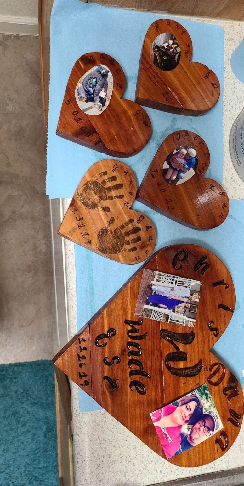
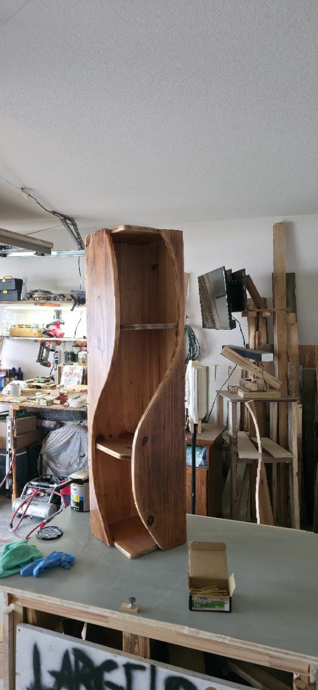

Furniture
Tables, desks, shelving, benches and custom furniture built to your dimensions.
Explore furniture → IF YOU COULD YOU WOOD WOODWORX
IF YOU COULD YOU WOOD WOODWORXHANDCRAFTED • CUSTOM • BUILT TO LAST • VETERAN OWNED
Custom furniture, rustic décor, personalized keepsakes and one-of-a-kind pieces built by hand — made for people who want something better than ordinary.
THE PORTFOLIO
See a small preview below, then visit the full portfolio to explore the rest of the work.




WHAT WE BUILD
Furniture, personalized pieces, rustic décor and custom lighting — built around what you actually need.
Tables, desks, shelving, benches and custom furniture built to your dimensions.
Explore furniture →Photo pieces, memorials, signs, keepsakes, names, dates and meaningful gifts.
Explore personalized →Bold statement pieces, natural grain, rich stains, charred finishes and handcrafted details.
Explore décor →Tripod lamps and unique wood-and-light combinations designed around your style.
Explore lighting →HOW IT WORKS
Bring us a sketch, photo, rough measurement or just an idea. We'll help turn it into something real.
Share what you want, your dimensions, style and budget.
We work through materials, details, finish and a clear project price.
Your piece is cut, shaped, assembled and hand-finished.
Pick it up or arrange delivery and enjoy something nobody else has.
THE WOODWORX DIFFERENCE
Custom woodworking is about taking a rough idea and turning it into something that feels like it belongs in your home.
Our work leans toward bold rustic character, visible grain, hand-shaped details and finishes that let the wood tell the story.
Learn more about Woodworx →LET'S BUILD SOMETHING
Send the dimensions, a photo or sketch, the type of wood you want, and any personalization.